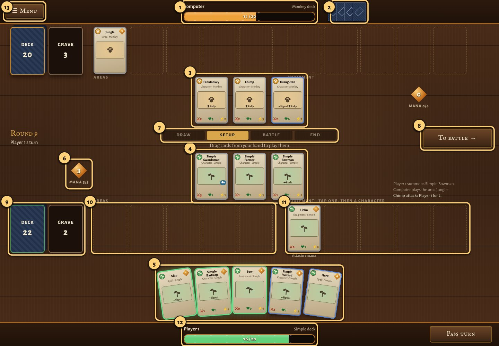
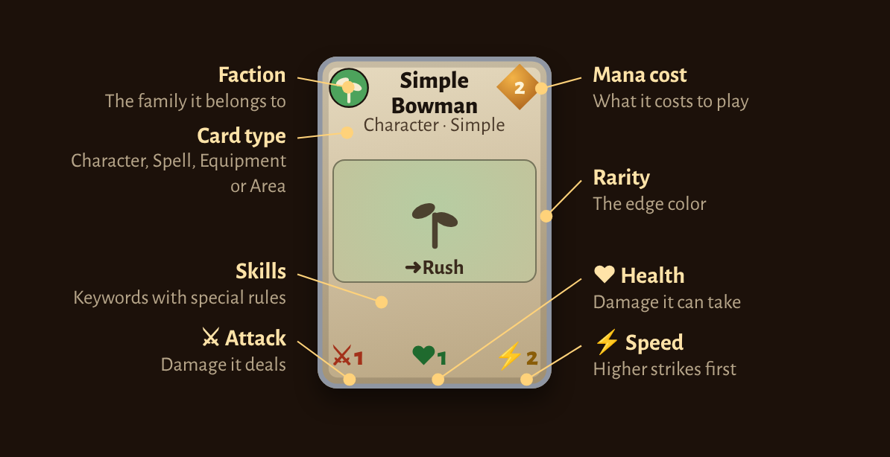
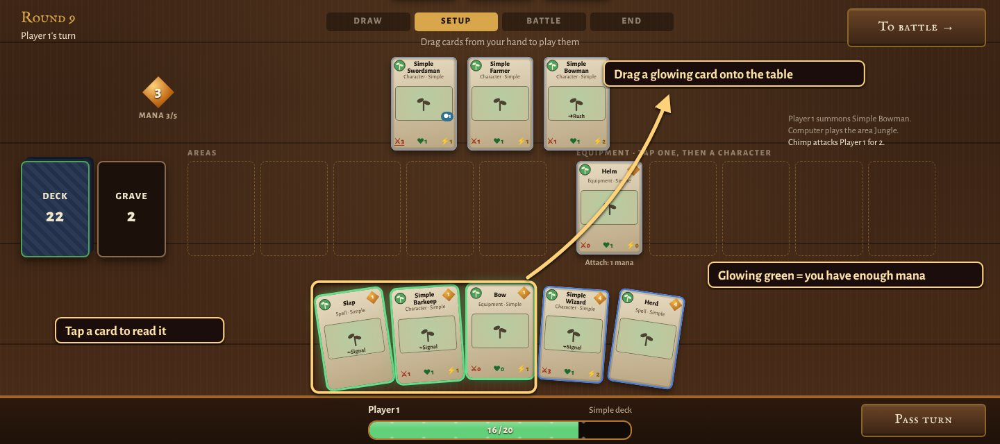
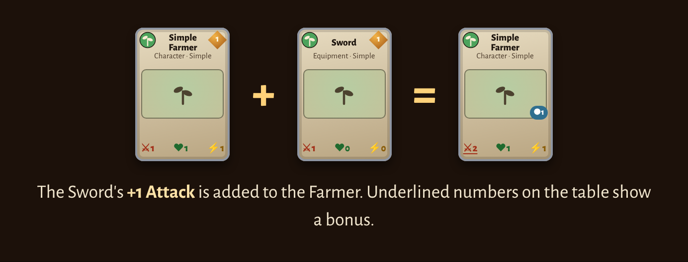
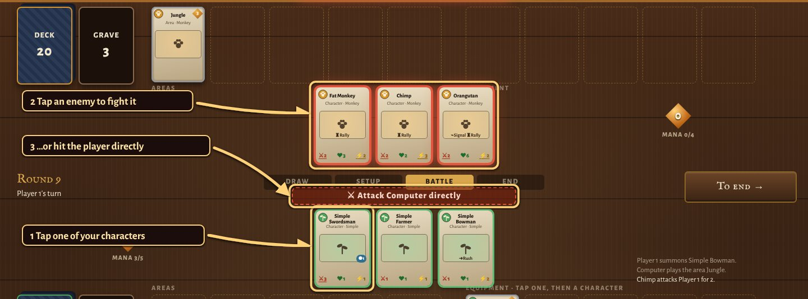
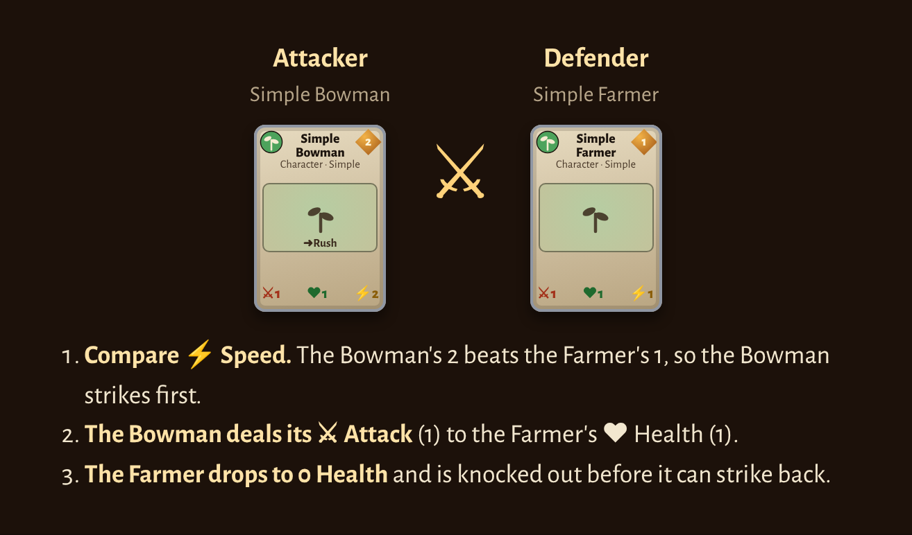

Shardfall is a card game for two players. Each of you brings a deck of cards, takes turns playing them, and sends characters to fight. You don't need to know any other card game. Everything is explained below.
Learn by playing. The tutorial walks you through a short game one step at a time and takes about five minutes. In normal games, beginner hints tell you what you can do next. You can turn them off from ☰ Menu.
- How to win
- The table
- Reading a card
- Your turn, step by step
- Playing cards
- Battle
- How cards work together
- Skills
- The decks
- Tips for your first games
- Words to know
1. How to win
- Both players start with 20 health. Bring the other player's health to 0 and you win.
- You lose if you have to draw a card when your deck is empty. This is rare.
2. The table
Your side is the bottom half of the screen and your opponent's is the top. Both halves are laid out the same way.

- 1Opponent's health. Bring it to 0 to win.
- 2Opponent's hand. Cards face down, so you can see how many they hold.
- 3Opponent's characters. These fight against you.
- 4Your characters. These fight for you.
- 5Your hand. Only you can see these. Cards glowing green are ones you can play right now.
- 6Your mana. How much you can spend this turn, and your maximum.
- 7Turn steps. The lit-up step shows where you are in your turn.
- 8Next-step button. Moves your turn forward: Draw card, To battle, To end, Pass turn.
- 9Deck and graveyard. Your deck is face down. Used and defeated cards go to the graveyard. Tap it to look inside.
- 10Areas. Area cards stay here and keep working.
- 11Equipment row. Equipment you're saving for later.
- 12Your health.
- 13Menu. These rules, the Almanac of every card, beginner hints, restart.
The list of recent moves on the right says what just happened, such as who attacked whom.
3. Reading a card

The three numbers at the bottom are a character's stats:
- ⚔ Attack: the damage it deals when it fights.
- ♥ Health: how much damage it can take. At 0 it is knocked out.
- ⚡ Speed: in a fight, the faster character strikes first.
The number in the orange diamond is the card's mana cost. Tap any card to see it large with its full ability (what it does) and an explanation of each skill.
The four kinds of card
Rarity
The colored edge of a card shows how rare it is. Rarer cards are usually stronger and cost more.
- Basic · Rare · Exotic · Divine · Unknown
4. Your turn, step by step
Players take turns. Every turn goes through the same four steps, in order. The step strip in the middle of the table lights up the one you're on, and the big button on the right moves you to the next.
Draw
Press Draw card to take the top card of your deck into your hand.
Setup
Play cards from your hand by paying their mana cost. Play as many as your mana allows.
Battle
Your characters attack. Each one can attack once.
End
Some cards do something now. Then press Pass turn and it's your opponent's turn.
Mana
- Mana is what you spend to play cards. At the start of every turn your mana refills, and your maximum grows by 1. So you have 1 mana on your first turn, 2 on your second, and so on.
- Mana you don't spend is lost at the end of the turn, so try to use it.
- Going first is an advantage, so the first player skips their first Draw, and the second player gets a one-time +1 token next to their mana. Tap it on any of your turns for 1 extra mana that turn.
5. Playing cards

- During Setup, drag a card from your hand onto the table. You can also tap it to read it, then press Play.
- Cards glowing green are ones you have enough mana for.
- A new character can't attack on the turn it's played, unless it has the Rush skill.
- If a card needs a target (for example “deal 2 damage to a character”), the cards you can choose glow blue. Tap one.
- Some abilities happen right away when a card is played. Cards with the Signal skill use their ability as they enter the table.
- Each side can hold up to 7 characters, 5 areas and 5 stored equipment.
Equipment

- Drag equipment onto one of your characters to attach it. Its numbers are added to the character's stats.
- Or drop it in your equipment row to save it. Attaching it later costs mana depending on its rarity: tap it, then tap a character.
- If the character is knocked out, its equipment is lost with it.
6. Battle

- Press To battle →. Characters that can attack have a green outline.
- Tap one of your characters to choose it.
- Tap an enemy character to fight it, or press Attack directly to hit the other player. You choose: enemy characters don't block you automatically.
How a fight works

- Compare ⚡ Speed. The faster character strikes first. If they're tied, the attacker strikes first.
- The first striker deals its ⚔ Attack as damage to the other's ♥ Health.
- If the other character survives, it strikes back with its own Attack.
- A character at 0 Health is knocked out and goes to the graveyard.
- Damage stays. A hurt character doesn't heal at the end of the turn.
- Attacking the player directly is safe: the player doesn't strike back.
- Each character attacks once per turn. Characters with Tower never attack. They only block.
- If the other side has a character with Challenge, every attack must go to it until it's gone.
7. How cards work together
Single cards are simple. Shardfall gets interesting when cards combine.
- Bonuses add up. A character's stats on the table include its equipment, areas and other cards' abilities. An underlined number means it has a bonus. Tap a character to see its equipment.
- Read the ability. Ability text says when something happens: when played, at the end of your turn, while you control something, or when it is knocked out.
- Answer big threats with spells. In the tutorial, Simplify turns a 5-Health wall into a 1 / 1 / 1 that any character can beat.
- Build around a plan. Each faction has a style. Simple Farmers bring more Farmers. Monkeys with Rally get stronger in groups. Zombies Reanimate after being knocked out. Fighters grow with equipment. Digital characters Level Up.
Counter spells (Nullify, Nope for One, Nope for All, Return to Sender and Try Again) can't be played yet.
8. Skills
Skills are keywords printed on a card, each with its own rule. They show on the card with their symbol.
Can attack on the turn it is played
Enemies must attack this character
Cannot attack but blocks
Triggers an ability when entering the field
9. The decks
Pick a deck on the main menu. Each belongs to a faction with its own style. Simple is the best place to start: its cards each do one clear thing.
- Simple, Monkey, Zombie, Fighter and Digital
The Almanac on the main menu shows every card in the game.
10. Tips for your first games
- Spend your mana every turn. Cheap characters early on add up.
- Check Speed before you attack. If the enemy is faster and its Attack is at least your Health, your character is knocked out before it hits back.
- Hit the player when it's safe. If you can't win a fight, attacking directly still gets you closer to winning.
- Tap cards to read them. Especially the computer's: you can read its characters too.
- Use the +1 token if you're the second player and one more mana lets you play a card.
11. Words to know
- Mana
- What you spend to play cards. It refills every turn.
- Hand
- The cards you hold. Only you can see them.
- Deck
- Your face-down pile. You draw from it.
- Table
- Where played characters, areas and equipment sit. Also called the field or battlefield.
- Graveyard
- Where used spells and knocked-out cards go.
- Stats
- A character's Attack, Health and Speed.
- Ability
- The text on a card describing what it does.
- Skill
- A keyword with a rule, like Rush or Challenge.
- Target
- The card or player an ability affects. You pick it by tapping.
- Knocked out
- A character whose Health reached 0. It goes to the graveyard.
- Faction
- The family a card belongs to: Simple, Monkey, Zombie, Fighter or Digital. Some cards are Neutral.